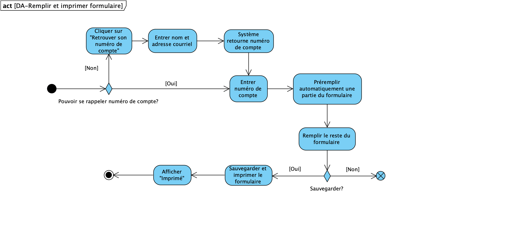
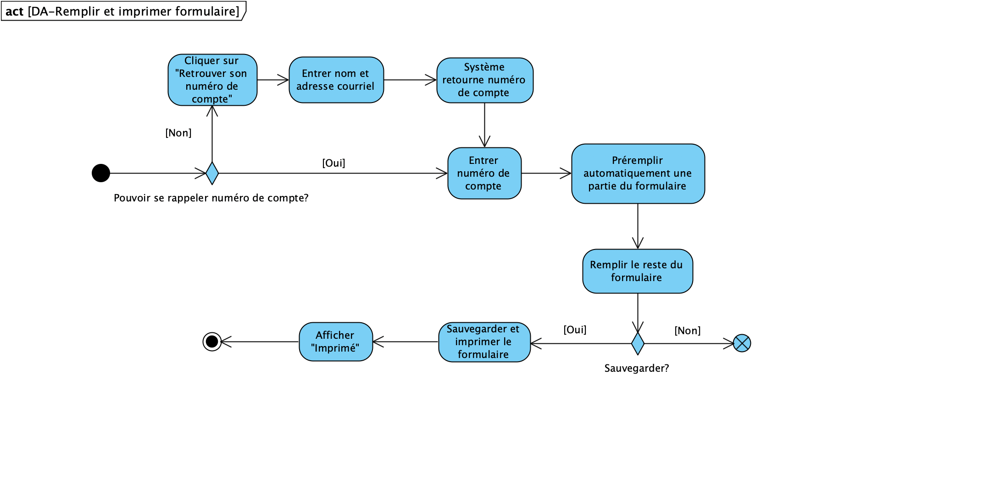
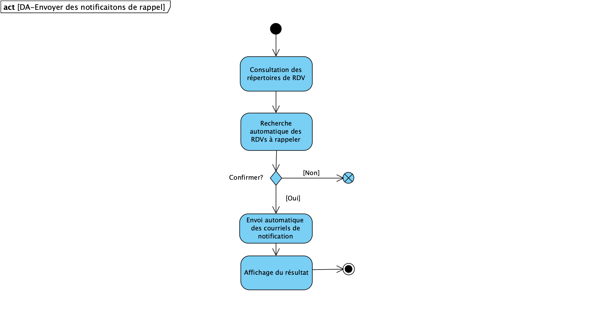
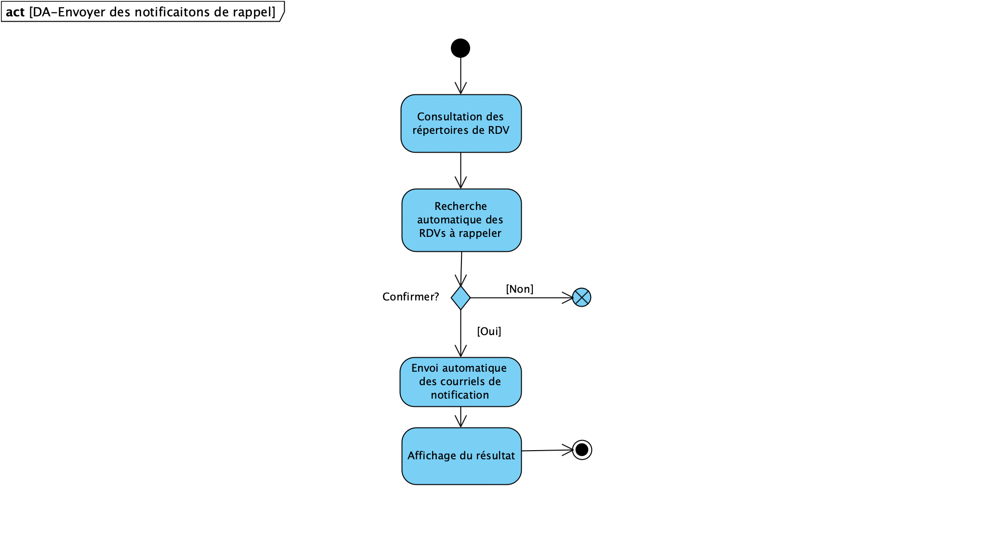

Plannification
Description
L'organisme à but non lucratif (OBNL) GoodPeople a entrepris l'initiative VaxTodo en coordination avec le gouvernement.
Le programme est conçu pour aider les personnes de plus de 18 ans à prendre rendez-vous pour les vaccinations.
En raison de l'excellente réaction, le nombre de réservations pour le programme a dépassé les attentes. GoodPeople nous
a donc chargé de mettre en place un système permettant d'organiser le processus de vaccination et de fournir le service.
Ce système permet de gérer les rendez-vous de vaccination, d'aider à la collecte d'informations et de rationaliser
le nombre de personnes vaccinées à chaque créneau horaire.
Distribution des taches
Livrable 1
| Tâche | Yuchen HUI | Yuyang XIONG | Wenhao XU |
|---|---|---|---|
| Rapport | 100% | ||
| Plannification | 100% | ||
| Compréhension | 50% | 50% | |
| Glossaire | 50% | 50% | |
| Cas d'utilisation | 33% | 33% | 33% |
| Scénario | 33% | 33% | 33% |
| Diagramme de cas d'utilisation | 100% | ||
| Risques | 100% | ||
| Exigences non-fonctionnelles | 100% | ||
| Prototype | 100% |
Livrable 2
| Tâche | Yuchen HUI | Yuyang XIONG | Wenhao XU |
|---|---|---|---|
| Analyse | 100% | ||
| Diagramme d'activités | 100% | ||
| Diagramme de classe | 100% | ||
| Diagramme de séquence | 100% | ||
| Prototype fonctionnel | 100% | ||
| Rapport | 100% | ||
| Git | 33% | 33% | 33% |
Hypothèses
Nous avons posé les hypothèses suivantes :
- Il y a deux files d'attente au guichet de ce local, une pour les personnes ayant un rendez-vous et une pour les personnes sans rendez-vous.
- Les volontaires se placeront devant les deux files d'attente et si une personne ayant une réservation est en retard (arrive plus de 15 minutes avant le créneau), elle sera affectée à l'autre file pour les personnes sans rendez-vous.
- Les ordinateurs de ce local se connecteront automatiquement au serveur et partageront les données.
- L'employé devra demander au visiteur un numéro de réservation pour confirmer le rendez-vous.
- Si le visiteur n'a pas de rendez-vous au moment de la création du compte, le système génère automatiquement un numéro de réservation.
- Les bénévoles géreront le nombre de personnes présentes (pas plus de 40) et n'ont pas besoin du système pour le faire.
- La modification et la suppression d'un compte de bénévole peuvent se faire sans la présence de ce bénévole.
- Les notifications et les rapports de vaccination doivent être envoyés manuellement.
- Le compte est connecté au profile des vaccins ainsi qu'au système de rendez-vous et les informations sont appelées automatiquement.
- Le numéro de réservation est un chiffre de 9.
Notre progrès par semaine
Au cours de la première semaine, nous nous sommes familiarisés avec
les exigences spécifiques de VaxTodo:re et nous avons eu une idée générale
de ce qu'était le projet. Nous avons ensuite établi un cadre général.
Sur la base du cadre général, nous avons étudié et recherché et analysé
les domaines de connaissance pertinents.
La semaine suivante, nous avions une rencontre avec le client Monsieur Lafontant.
Nous avons déclaré notre confusion:
1 : La fonctionnalité contrète demandée par "gestions des comptes, des bénévoles" dans l'énoncé du travail.
2 : Pourrait un bénévole manipuler le système?
3 : Notre système devrait être capable de controler le nombre de personne dans le local?
Durant cette semaine nous avons considérer les risques éventuelles et avons analysé les besoins non-fonctionnels.
Cette partie a été ajouter au rapport Par Yuchen Hui.
Durant la troisème semaine, Wenhao Xu a commencé à rédigier le rapport(Organisation de PageWeb,etc.)
En même temps nous avions une deuxième rencontre avec le client pour déterminer le contenu concrète
de 'rapport de vaccination' indiqué dans l'énoncé. Après que l'exigence soit claire, nous avons extrait un glossaire.
Par la suite, nous avons cherché des cas d'utilisation et nous avons partagé le travail d'écriture des scénarios.
Finalement, après tout est préparé, Yuyang Xiong a désinné le diagramme de CU ainsi que le prototype de notre système.
Après de nombreuses rencontres et une familiarisation avec l'activité
VaxTodo, nous avons préparé un glossaire rassemblant les termes et
expressions clés caractérisant l'environnement.
Compréhension du domaine
Glossaire
- Campagne de vaccination
- la campagne lancée par le gouvernement du Québec, avec le but de lutter contre la Pandémie de Covid-19, où tout les résident sont sugérés de se faire vacciner de quatre types de vaccins : Moderna, Pfizer, AstraZeneca, Janssen.
- VaxTodo
- Une initiative entreprise par l'organisme à but non lucratif (OBNL) GoodPeople qui permet à toute personne majeure agée de 18 ans et plus de prendre un rendez-vous avec GoodPeople pour se faire vacciner.
- VaxTodo:re
- Un système d'information qui sera manipulé uniquement par les employés, à implémenter par notre équipe de développement.
- Local
- Emplacement dédié à la vaccination, loué par l’organisme, où se déroule la campagne de vaccination. Pour respecter au mieux les règles sanitaires, la capacité du local se limite à 40 personnes, ne comptant pas l’équipe et les professionnels de la santé.
- Service
- Service de vaccination, y compris la pris de Rendez-vous, la vaccination et le suivi.
- Visiteur
- Personne majeure agée de 18 ans qui se présente au local pour se faire vacciner (Avec ou sans Rendez-vous).
- Bénévole
- Personel responsables d'accueillir une personne et les acheminer aux employés.
- Employé
- Personel qui font le traitement du dossier (visiteur,bénévole et lui-même) et le choix du vaccin avec le visiteur.
- Équipe
- Qui consiste des emplyés et des Professionnels de la santé : personel : apportent tout l'équipement nécessaire pour la vaccination.
- Type de dose
- Première dose ou deuxième dose.
- Rapport de vaccination
- Une preuve de vaccination, soit un document PDF présentant son nom, sa date de naissance, un code QR et la liste des vaccins administrés.
- Suivi
- Service supplémentaire chargé par les employés traitant les changement de rendez-vous, Envoi des courriels et génération des rapport Etc..
- Compte
- Un compte dans le système VaxTode :re qui présentera les informations personnelles du visiteur. Il est lié au numéro de compte de douze chiffre et le courriel du visiteur. Créé par l’employé au moment de comfirmation de RDV.
- Profil de vaccination
- Un emsemble qui regroupe les informations liées aux vaccins reçus: type de dose, identification du vaccin, date et heure de vaccination. (pour chaque compte)
- Calendrier de rendez-vous
- un calendirer où sont enregistrées les heures et des dates des RDV prise.
- Équipement
- Outils utilités par le professionel pour la vaccination, tels que alcool, injecteur, etc.
- Rendez-vous
- Une intervalle de temps qu'une personne a réservé ou réservera pour se rencontrer avec un professionel.
- Visite planifiée
- Entrer dans le local pour se vacciner sans rendez-vous.
- Visite spontanée
- Entrer dans le local pour se vacciner avec rendez-vous.
- Questionnaire
- Formulaire qui demande au visiteur à remplir avec toutes ses informations nécessaires, telles que nom, prénom, si déjà reçu une première dose, etc.
- Numéro de réservation
- Quand un visiteur prend un rendez-vous la première fois, le système génère un string composé de neuf chiffres.
- Code d'employé
- Un code composé de neuf chiffres, avec lequel l'employé pourait log in dans le système.
- Mot de pass
- Une chaine de caractère contenant au moins 1 chiffre, 1 majuscule, 1 minuscule et 1 caractère spécial. Il sera utilisé avec le code d'employé pour log in dans le système.
Modélisation du domaine
Cas d'utilisation

Diagramme des activités
Tous les diagrammes des activités sont dans le même file 'DM2-DA.vpp'. Sélectionnez dans la barre de navigation 'View/Project Browser'


 

 


Diagramme de classe
Diagramme de séquence
Scénario
Cas d'utilisation 1
- Nom:Créer un compte
- But:Créer un compte des visiteur lorsque le première visite.
- Précondition: Le visiteur a une carte d'assurance.
- Acteur:Employé, visiteur(principal)
- Nom de famille et prénom du visiteur
- Numéro de réservation
- Date de naissance
- Address
- Numéro de téléphone
- Type de dose(1,2)
- Identification du vaccin
- 3a.1. Le visiteur n'a pas pris de rendez-vous à l'avance et l'employé saisit "Pas de rendez-vous" dans le système.
- 3a.2.L'employé a demandé des informations au visiteur. -------------------------------------- Données à collecter --------------------------------------
- Nom de famille et prénom du visiteur
- Date de naissance
- Date de la visite (YYYY-MM-DD);Heure de la visite (HH:MM)
- Address
- Numéro de téléphone
- Type de dose(1,2)
- Identification du vaccin
- 3a.3. L'employé entre les informations dans le système.
- 3a.4. L'employé confirme avec le visiteur que les informations saisies sont correctes.
- 3a.5. La création est effectuée.
- 3a.6. Le systèm crée un numéro de réservation et un numéro unique à douze chiffres qui sera rattaché à une adresse courriel unique.
- Le système stocke des informations sur les comptes créés.
Cas d'utilisation 2
- Nom:Modifier un compte
- But:Mettre à jour un compte invité lorsque des informations doivent être actualisées.
- Précondition: Le visiteur a déjà un compte.
- Acteur:Employé(principal), visiteur
- Nom de famille et prénom du visiteur
- Date de naissance
- Numéro unique à douze chiffres qui sera rattaché à une adresse courriel unique
- Le système enregistre les informations relatives au compte modifié
Cas d'utilisation 3
- Nom:Supprimer un compte
- But:Dans certains cas, l'employé devra supprimer un compte invité.
- Précondition: Le visiteur a déjà un compte. Quand la suppression d'un compte est nécessaire.
- Acteur:Employé(principal)
- Le système supprime les informations du compte.
Cas d'utilisation 4
- Nom: Ajouter des rendez-vous
- But: Une visiteur veut fixer des rendez-vous pour la vaccination.
- Précondition: Le visiteur est âgé de 18 ans et le nombre de personnes pour lesquelles il veut prendre un rendez-vous est inférieur ou égal à 2.
- Acteur: Employé(principal)， Visiteur(secondaire)
- Le système a enregistré les informations suivantes: numéro de réservation, prénom du visiteur, nom du visiteur, date de la visite, heure de la visite et type de dose.
Cas d'utilisation 5
- Nom: Supprimer un rendez-vous
- But: Un visiteur veut annuler son rendez-vous.
- Précondition: Un employé a reçu un appel d'un visiteur qui demande d'annuler son rendez-vous.
- Acteur: Employé(principal), Visiteur(secondaire)
-
8a. Le numéro de réservation entré n'existe pas
8a.1. Le système n'a pas trouvé ce numéro de réservation.
8a.2. Le système affiche "Numéro non valide" à l'écran.
8a.3. Le scénario reprend à l'étape 4.
8a. Le rendez-vous correspondant à ce numéro de réservation a été déjà annulé.
7a.1. Le système indique que ce rendez-vous a été déjà annulé.
7a.2. Le scénario se termine.
- Le système a enlevé toutes les informations du rendez-vous supprimé. Une position de rendez-vous s'est libéréé dans le calendrier.
Cas d'utilisation 6
- Nom: Envoyer des notifications
- But: Employé rappelle des visiteurs leur rendez-vous prochain.
- Précondition: Il y a des visites qui sont prévues pour les prochaines 48 heures.
- Acteur: Employé(principal)
-
3a. Il n'y aura aucun rendez-vous dans les prochaines 48 heures
3a.1. Le système montre une page vide.
3a.2. Le scénario se termine.
- Le système a marqué tous les rendez-vous aux quels l'employé avait envoyé la notification.
Cas d'utilisation 7
- Nom: Produire et envoyer des rapports de vaccination
- But: Un visiteur veut recevoir son rapport de vaccination.
- Précondition: Le visiteur s'est vacciné au GoodPeople.
- Acteur: Employé(principal), Visiteur(secondaire)
-
5a. Le numéro de compte n'existe pas
5a.1. Le système n'a pas trouvé ce numéro de compte.
5a.2. Le système affiche "Numéro non valide" à l'écran.
5a.3. Le scénario reprend à l'étape 4.
8a. Le rapport a été déjà produit
8a.1. Un rapport se trouve déjà dans le compte.
8a.2. Le scénario saute à l'étape 10.
- Le système a marqué le bouton "Produire rapport" comme "Produit déjà".
Cas d'utilisation 8
- Nom: Créer des bénévoles
- But: l'équipe voudrait ajouter son information personel dans le système
- Précondition: l'équipe recrute un vouveau bébévole.
- Acteur:Employé(principal), bénévole(secondaire).
- som nom, prénom, adresse, numéro de téléphone et adresse courriel
- liste de jours où il est disponible pour venir au local
- Des informations de ce bénévole sont disponibles dans le système.
Cas d'utilisation 9
- Nom: supprimer des bénévoles
- But: supprimer les informations d'un bénévole du système.
- Précondition: Un bénévole ne fait plus partie de l'équipe.
- Acteur:Employé.
- 3.1 le système vérifie que le nom existe.
- 3a.1. Le système invite l'employé à resaisir le nom.
- 3a.2. L'employé resaisit le nom du bénévole à supprimer.
- 3a.3 Le scénario reprend à l’étape 4
- Des informations de ce bénévole ne sont disponibles dans le système.
Cas d'utilisation 10
- Nom: modifier des bénévoles.
- But: modifier les informations d'un bénévole dans le système.
- Précondition: Quand une modification sur des informations des bénévoles est nécessaire.
- Acteur:Employé.
- 3a.1. Le système invite l'employé à resaisir le nom.
- 3a.2. L'employé resaisit le nom du bénévole à supprimer.
- 3a.3 Le scénario reprend à l’étape 4
- Des informations de ce bénévole sont modifiées.
Cas d'utilisation 11
- Nom: Accéder au système.
- But: Un employé log in dans le système pour des gestions
- Précondition: L'employé procède son code d'employé valide et son mot de pass.
- 2a.1. Le système invite l'employé à resaisir le code et le mot de pass.
- 2a.2. L'employé resaisit le code et le mot de pass.
- 2a.3 Le scénario reprend à l’étape 3
- L'employé est permit de gérer les informations dans le système.
Cas d'utilisation 12
- Nom:Confirmer visiteur
- But:L'employé confirme le visiteur.
- Acteur:Visiteur(principal), Employé(secondaire)
- 2a.1. L'employé ouvre le calendrier.
- 2a.2. L'employé demande au visiteur son nom et son numéro de téléphone.
- 2a.3 L'employé cherche ces informations sur le calendirer.
- 2a.4 Ce sénario se termine.
- 2a.3.a.1 L'employé redemande au visiteur ses informations.
- 2a.2.a.2 Le scénario reprend à l’étape 2a.3.
- 6a.1. Le systèm affiche sur l'écran "Numéro de réservation invalide".
- 6a.2 Le scénario reprend à l’étape 3.
Cas d'utilisation 13
- Nom: Vérifier RDV
- But: Bénévole vérifie qu'un visiteur a pris un RDV.
- Acteur:visiteur(principal), bénévole(secondaire).
- 4a.1. Le système affiche "trouvé pas ce RDV".
- 4a.2. Le scénario reprend à l'étape 1.
Cas d'utilisation 15
- Nom: Ajouter un visiteur spontané au calendrier
- But: Ajouter un visiteur spontané au calendrier.
- Acteur: visiteur(principal), bénévole(secondaire).
- Précondition: Le visiteur n'a pas pris de RDV ou il est en retard de 15 min.
Analyse
Notre analyse préliminaire nous a permis d'extraitre les risques et les exigences non-fonctionelles
Risques
- Risques sévère :
- Les données personnelles des visiteur est sous menace de divulgation
- La fonctionnalité du système dépend du réseaux local.
- Risques importante:
- L'exigence est sujete à changer dans le future.
- Le fond non adéquat pour pour le développement, du fait que l'organisme est non-lucatif.
- Risques éloignées :
- Les programmeurs manque des compétences techniques nécessaires à satisfaire l'exigence
- Distribution irraisonnable des tâches entre les programmeurs.
- Obstacle Mineur :
-
Des étudiants dans l'équipe de développement est trop chargé par des devoirs dans l'université.
- La pandémie Covid-19 affecte la communication entre nous.
-
Des étudiants dans l'équipe de développement est trop chargé par des devoirs dans l'université.
Exigences non-fonctionnelles
- Plateforme : Le logiciel doit s'adapter au système Windows
- Interface utilisateur : sous forme de commande de ligne et éventuellement GUI dans l'avenir
- Sécurité : Les données sont censées d'être protégées des divulgations.
- Communication avec d'autres système : Vaxtodo:re doit permet des transferts de données dans le réseax local
- Fiabilité : Durant la journée (8-18h), les pannes ne seront pas tolérées.
- Données et format de stockage: les enregistrements seront stockés sur disque en fichier texte.
- performance: Réponse rapide aux demandes énormes en même temps
Prototype
La photo suivante correspond au cas d'utilisation 'Créer un RDV':